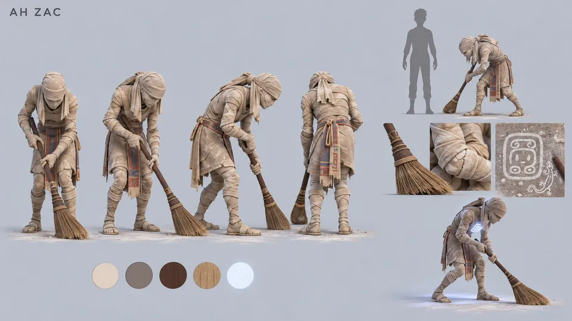
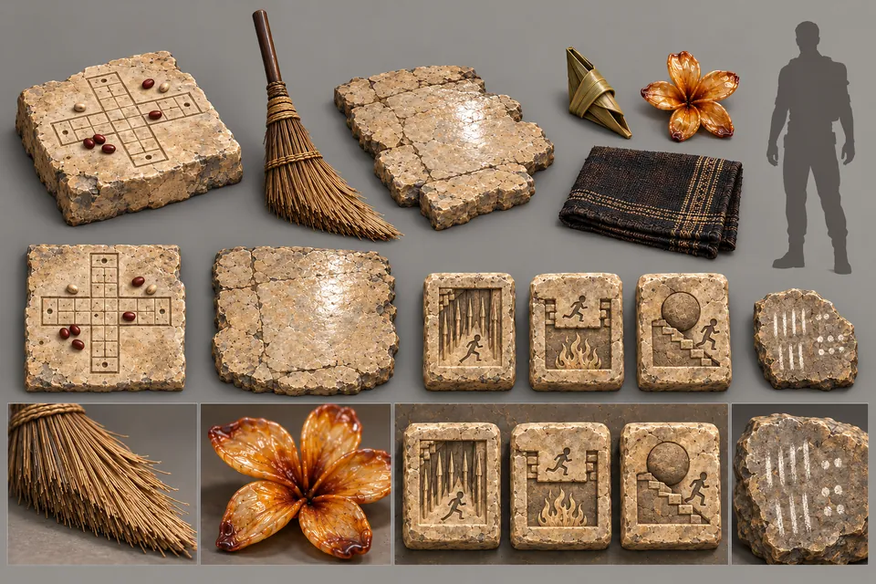

Start / Figuren / Erweckte Wächter
Feger des Weißen Wegs
Ah Zac
Ein kleiner Wächter, mitten im Fegen erstarrt am Fuß des Podests, so reglos, dass ihn jeder Kletterer für eine Statue hält.
Vornübergebeugt, einen Fuß vor, beide Hände um einen Besen aus Palmfasern geschlossen, steht Ah Zac vor dem mittleren Portal und hat seinen Strich nie beendet.
Er hielt den gekalkten Streifen zwischen Altar und Portalen weiß, damit niemand auf dem Weg zum Portal je auf einen losen Splitter trat. Jeden Morgen zeichnete er mit dem Besenstiel das Zeichen des Tages in den Kalkstaub, immer mit einer winzigen Eidechse in der Ecke, und jeden Abend fegte er es fort.
Dreißig Jahre davon hinterließen eine glasig polierte Stelle am Fuß der Stufe: die einzige Aufzeichnung der Halle, die immer verschwinden sollte. Der Besen ist an einer Kante schräg abgenutzt. Ein Bildhauer kann einen Besen meißeln, aber nur eine Hand kann ihn abnutzen.
- Rolle
- Benannter Wächter, die Schwelle
- Zu finden
- Am Fuß des Podests, mit Blick auf das mittlere Portal
- Zustand
- Ruhend, mitten im Strich
- Erkennungszeichen
- Kalkweiße Bandagen, die wie Gips reißen; ein Besen, abgenutzt von jahrelang demselben Strich




„Pass auf deine Füße auf, Freund. Ich hab's gerade erst weiß gemacht.“
Ah Zac, zu Lebzeiten
Designnotizen
Der kleinste Wächter und der einzige, dessen Bandagen weiß statt braun sind. Gebückt reicht er einem Erwachsenen nicht bis zur Schulter; sein Siegel zeigt zum Boden und bleibt verborgen. Sollte er sich je erheben, erleuchtet es zuerst den weißen Boden, wie tief stehendes Mondlicht.